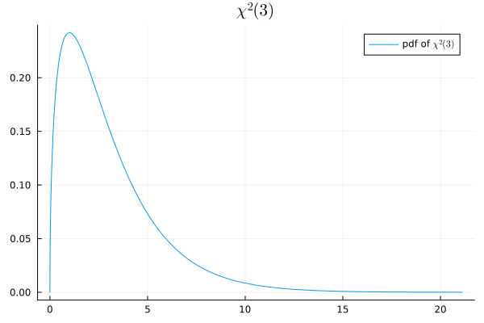
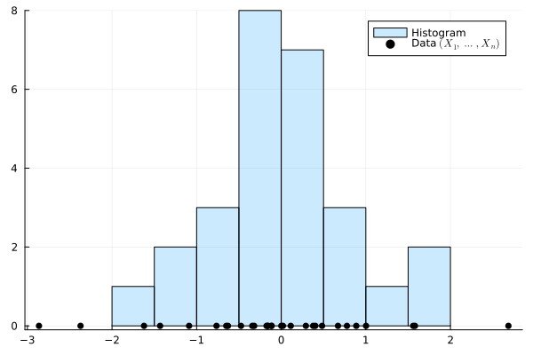
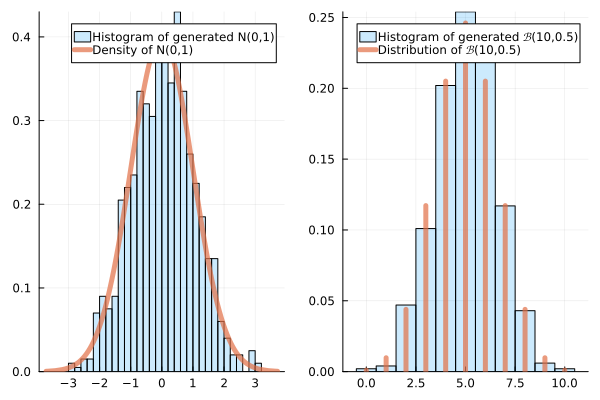
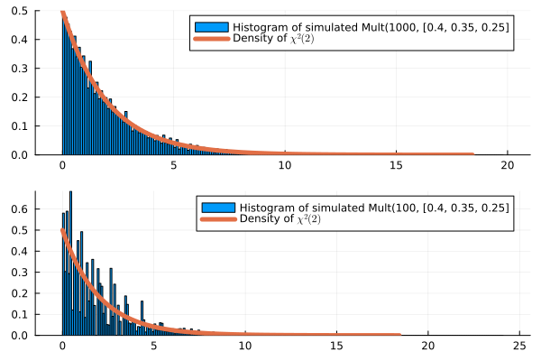
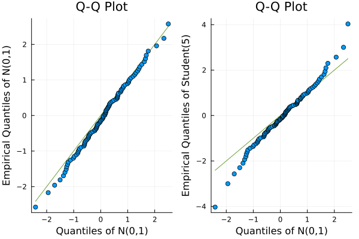

Goodness of Fit and Homogeneity Tests
Outline
- Multinomial Distributions
- Goodness of Fit
- Chi-squared goodness of fit test
- Histograms
- Chi-squared goodness of fit to compare distributions
- Using CDFs and KS test
Multinomial Distribution
Binomial distribution
. . .
Draw \(n\) balls, blue or red, with resampling
. . .
\(p_1, (1-p_1)\): proportion of blues/red [Wooclap]
. . .
\(X\), \(Y\): counts of blues/red
. . .
Then:
\(X \sim \mathrm{Bin}(n,p_1)\), \(Y=n-X \sim \mathrm{Bin}(n,1-p_1)\)
. . .
If \(k_1 +k_2 = n\):
\(\mathbb P((X,Y) = (k_1,k_2)) = \binom{n}{k_1}p_1^k(1-p_1)^{k_2}\)
Multinomial distribution
. . .
Draw \(n\) balls, \(m\) potential colors, with resampling
. . .
\((p_1, \dots, p_m)\): proportions of each color: \(\sum_{i=1}^m p_i = 1\)
. . .
\(X_1, \dots, X_m\): counts of each color [Wooclap]
. . .
Then:
\((X_1, \dots, X_m) \sim \mathrm{Mult}(n,(p_1, \dots, p_m))\)
Formula
If \(k_1 + \dots + k_m = n\) and \(\dfrac{n!}{k_1!\dots k_m!} = \binom{n}{k_1,\dots, k_m}\) is a multinomial coefficient:
\(\mathbb P((X_1, \dots, X_m)=(k_1, \dots, k_m)) = \dfrac{n!}{k_1!\dots k_m!}p_1^{k_1} \dots p_m^{k_m}\)
Proof of the Formula
. . .
Step 1: probability of one ordered sequence with counts \((k_1, \dots, k_m)\)
\[\underbrace{1, \dots, 1}_{k_1}, \underbrace{2, \dots, 2}_{k_2}, \dots, \underbrace{m, \dots, m}_{k_m} \quad \longrightarrow \quad p_1^{k_1} \cdots p_m^{k_m}\]
. . .
Step 2: number of such sequences
Permutations of \(n\) objects with \(k_i\) identical of type \(i\):
\[\frac{n!}{k_1! \dots k_m!}\]
Example
. . .
Take \(n\) draws of a dice. This follows a \(Mult(n, (1/6, \cdot, 1/6))\)
. . .
Ask \(n\) people their favorite color among \(k\) options: \(\text{Mult}(n, (p_1, \ldots, p_k))\).
. . .
Generate \(n\) words from a vocabulary of size \(V\): \(\text{Mult}(n, (p_1, \ldots, p_V))\).
Exercise
. . .
Take \((X_1, \dots, X_m) \sim \mathrm{Mult}(3,(1/4, 1/2, 1/4))\).
. . .
What is the probability of observing \((2, 1, 0)\)?
. . .
\(\mathbb P((X_1,X_2,X_3)=(2,1,0)) = \frac{3!}{2!\,1!\,0!}\left(\frac{1}{4}\right)^2\left(\frac{1}{2}\right)^1\left(\frac{1}{4}\right)^0 \\= 3 \cdot \frac{1}{16} \cdot \frac{1}{2} = \frac{3}{32}\)
\(\chi^2\) Goodness of Fit
\(\chi^2\) Goodness of Fit Problem
. . .
We observe \((X_1, \dots, X_m) \sim \mathrm{Mult}(n, q)\).
. . .
This corresponds to \(n\) counts: \(X_1 + \dots + X_m = n\)
. . .
\(q = (q_1, \dots, q_m)\) corresponds to probabilities of getting color \(1, \dots, m\)
. . .
Let \(p = (p_1, \dots, p_m)\) be a known vector s.t. \(p_1 + \dots + p_m = 1\).
\(H_0:~ q = p ~~~\text{or}~~~ H_1: q \neq p \; .\)
\(\chi^2\) Goodness of Fit Test (Adéquation)
. . .
Chi-squared test statistic:
\[\psi(X) = \sum_{i=1}^m\frac{(X_i-n_i)^2}{n_i} \; .\]
where \(n_i = np_i = \mathbb E[X_i]\) is the expected number of counts for color \(i\).
. . .
Sometimes written as:
\(\psi(X) = \sum_{i=1}^m\frac{(O_i-E_i)^2}{E_i} \; ,\)
where \(O_i\) stands for “observed count of \(i\)” and \(E_i\) stands for “expected count”
Property
. . .
When \(np_i\) are large, under \(H_0\): \[\psi(X) \xrightarrow{d} \chi^2(m-1)\]
Proof
. . .
\(X \sim \text{Mult}(n, p)\) has mean \(np\) and covariance \(n\Sigma\) where \(\Sigma = \text{diag}(p) - pp^\top\).
. . .
Indeed: \[\Sigma_{ij} = \text{Cov}(X_i, X_j) = \begin{cases} np_i(1-p_i) & i = j \\ -np_ip_j & i \neq j \end{cases}\] which gives \(\Sigma = n(\text{diag}(p) - pp^\top)\).
By the multivariate CLT: \[\frac{X - np}{\sqrt{n}} \xrightarrow{d} \mathcal{N}(0, \Sigma)\]
. . .
Let \(Z = \text{diag}(p)^{-1/2}(X - np)/\sqrt{n}\), so that \(\psi(X) = \|Z\|^2\). By the continuous mapping theorem:
. . .
\[Z \xrightarrow{d} \mathcal{N}(0,\, P), \quad P = I - \sqrt{p}\sqrt{p}^\top\] Since \(P\) is an orthogonal projection of rank \(m-1\), \(\mathcal{N}(0, P) \stackrel{d}{=} PG\) with \(G \sim \mathcal{N}(0, I)\), therefore: \[\psi(X) = \|Z\|^2 \xrightarrow{d} \|PG\|^2 \sim \chi^2(m-1)\]
Test and Rejection Region
. . .
Reject \(H_0\) if \(\psi(X) > t_{1-\alpha}\), the \((1-\alpha)\)-quantile of \(\chi^2(m-1)\).
. . .
We reject for large values of \(\psi\) (right-tailed test).
. . .
Question: We observe a \(\chi^2\) stat equal to \(32\) for 1000 draws of a supposedly unbiased dice. It it normal?
. . .
If we observe \(\chi^2\) stat equal to \(0.001\), what does it mean?

Example: Bag of Sweets
| Color | Observed Counts |
|---|---|
| Red | \(X_1=50\) |
| Green | \(X_2=30\) |
| Yellow | \(X_3=20\) |
| Expected Counts |
|---|
| \(n_1=40\) |
| \(n_2=35\) |
| \(n_3=25\) |
Comparison to a Theoretical Disrtribution
Representation with Indicators
. . .
We draws independently and with resampling \(m\) categories \((c_1, \dots, c_m)\). Probability of getting category \(c_k\) is \(p_k\).
Let \(Z_i\) be the category of the \(i^{th}\) draw
. . .
Then, if \(X_k= \sum_{i=1}^n \mathbf{1}\{Z_i = c_k\}\)
\((X_1, \dots, X_m) \sim Mult(n, (p_1, \dots, p_m))\)
Histograms with this Representation
. . .
We observe \((Z_1, \dots, Z_n) \in \mathbb R^n\)
. . .
Fix some intervals \((I_1, \dots, I_m)\) intervals that partition \(\mathbb R\)
. . .
\(\mathrm{counts}(I) = \sum_{i=1}^n \mathbf 1\{Z_i \in I\} \in \{1, \dots, n\}\;\)
\(\mathrm{freq}(I) = \mathrm{counts}(I)/n\)
\(\mathrm{hist}(a,b,k) = (\mathrm{counts}(I_1), \dots,\mathrm{counts}(I_m))\)
Histogram in Practice
. . .
Usually, we use balanced histograms on \([a,b)\):
\(I_l = \big[a + (l-1)\tfrac{b-a}{m},a + l\tfrac{b-a}{m}\big)\)
. . .
We can add \((-\infty, a)\) and \([b, +\infty)\) to get a partition of \(\mathbb R\)
Can be normalized in counts (default), frequency, or density (area under the curve = 1)
. . .
We can similarly define formally histograms when \(X_i \in \mathbb R^p\) (even if there is no clean representation).
Illustration
. . .

Law of large numbers, Monte Carlo (informal)
. . .
Assume that \((X_1, \dots, X_n)\) are iid of distrib \(P\), and that \(a\),\(b\), \(m\) are fixed
. . .
The histogram \(\mathrm{hist}(a,b,m)\) converges to the histogram of the density \(P\)
Convergence of the histogram (Proof)
. . .
Let \(I_j = \bigl[a + (j-1)\tfrac{b-a}{k},\ a + j\tfrac{b-a}{m}\bigr)\) for \(j=1,\dots,m\) be the bins. The height of the \(j\)-th bar is
. . .
\[\hat{h}_j = \frac{1}{n} \sum_{i=1}^n \mathbf{1}_{X_i \in I_j}.\]
Since the \(X_i\) are iid, the indicators \(\mathbf{1}_{X_i \in I_j}\) are iid Bernoulli with mean \(P(I_j)\). By the strong LLN,
\[\hat{h}_j \xrightarrow{a.s.} P(I_j) \quad \text{as } n\to\infty.\]


\(\chi^2\) Goodness of Fit to a given distribution
. . .
We observe \((X_1, \dots, X_n) \in \mathbb R^n\), iid with unknown distrib \(P\).
. . .
We want to test whether \(P\) is equal to a known distribution \(P_0\)
\(H_0\): \(P = P_0\) VS \(H_1\): \(P \neq P_0\)
[Wooclap]
. . .
Idea: partition \(\mathbb R\) and compare empirical VS theoretical histograms.
. . .
If \((I_1, \dots, I_m)\) are disjoint intervals,
. . .
we write \(p_1 = P_0(I_1), \dots, p_{m} = P_0(I_m)\) for the theoretical probabilities
. . .
These are known because \(P_0\) is known and \(I_j\) are fixed by ourselves!!
. . .
We write \(C_j = \sum_{i=1}^n \mathbf{1}\{X_{i} \in I_j\}\).
. . .
\(C_j\) is the empirical number of times we get observations in \(I_j\).
. . .
By definition, under \(P_0\), \(C_j\) follow a multinomial distribution \(\mathrm{Mult}(n, (p_1, \dots, p_{m}))\)
. . .
We want to compare \(C_j\) (empirical) against \(np_j\) (theoretical)
Chi-squared test statistic
. . .
We observe \(X=(X_1, \dots, X_n) \in \mathbb R^n\), and define \(C_j := C_j(X) = \sum_{i=1}^n \mathbf{1}(X_i \in I_j)\)
. . .
Chi-squared statistic:
\(\psi(X)=\sum_{j=1}^m \frac{(C_j - np_j)^2}{np_j}\)
. . .
If \(np_j\) are large enough for all \(j\) (say \(np_j \geq 15\)) then \(\psi(X) \asymp \chi^2(m-1)\)
. . .
Rejection Region: \([t_{1-\alpha}, +\infty)\) where \(t_{1-\alpha}\) is the \((1-\alpha)\)-quantile of \(\chi^2(m-1)\)
. . .
This is an symptotic test
Corrected \(\chi^2\) Test
. . .
If \(P_0\) is unknown, lying in a parametric family \(\mathcal{P} = \{P_\theta : \theta \in \Theta \subset \mathbb{R}^\ell\}\)
. . .
Estimate \(\theta\) by MLE \(\hat\theta\) from the data \(X_1,\dots,X_n\)
. . .
Replace theoretical probabilities by \(\hat p_j = P_{\hat\theta}(I_j)\)
. . .
Compute the corrected statistic:
\[\psi(X) = \sum_{j=1}^m \frac{(C_j - n\hat{p}_j)^2}{n\hat{p}_j}\]
Distribution of the Corrected \(\chi^2\)
. . .
Under \(H_0\), each estimated parameter costs one degree of freedom:
. . .
\(\psi(X) \asymp \chi^2(m - 1 - \ell)\)
Intuition: estimating \(\ell\) parameters from the data imposes \(\ell\) additional constraints on the counts \(C_j\),
. . .
Reducing the effective degrees of freedom from \(m-1\) to \(m-1-\ell\).
Example: Goodness of Fit to a Poisson distribution
\(H_0\): \(X_i\) iid \(\mathcal P(2)\)
X = [1, 0, 1, 0, 1, 0, 0, 0, 0, 0, 4, 3, 0, 1, 1, 2, 3, 0, 1, 0, 0, 2, 1, 0, 1, 0, 0, 2, 0, 0]| \(0\) | \(1\) | \(2\) | \(\geq 3\) | Total | |
|---|---|---|---|---|---|
| Counts | 16 | 8 | 3 | 3 | 30 |
| Theoretical Counts | 4.06 | 8.1 | 8.1 | 9.7 |
- If \(H_0\) is \(X_i\) iid \(\mathcal P(\lambda)\) with unknown \(\lambda\)
- \(\hat \lambda = 0.8\), \(\sum_{i=1}^4 \frac{(X_i - n_i)^2}{n_i} \approx 9.4\)
- Not \(\chi^2(3)\) but \(\chi^2(2)\)
(1-cdf(Chisq(2),9.4))\(\approx 0.009\). Reject at level 1%
[Wooclap]
Comparison with QQ-Plots
. . .
We observe \((X_1, \dots, X_n) \in \mathbb R^n\) of unknown CDF \(F\)
. . .
We want to test whether \(F= F_0\):
. . .
\(H_0\): \(F = F_0\) VS \(H_1\): \(F \neq F_0\)
. . .
We write \(X_{(1)} \leq \dots \leq X_{(n)}\) for the ordered data
. . .
empirical \(\frac{k}{n}\)-quantile: \(X_{(k)}\) [Wooclap]
. . .
\(\frac{k}{n}\)-quantile: \(x\) such that \(F_0(x) = \frac{k}{n}\)
. . .
Idea: Under \(H_0\), \(X_{(k)}\) should be approximately equal to the \(k/n\)-quantile of \(F_0\)
QQ-Plot
- Represent the empirical quantiles in function of the theoretical quantiles.
- Compare the scatter plot with \(y=x\)

Kolmogorov-Smirnov Test
- \(\psi(X) = \sup_{x}|\hat F(x) - F_0(x)|\)
- Approx: \(\mathbb P_0(\psi(X) >c/\sqrt{n}) \to 2\sum_{r=1}^{+\infty}(-1)^{r-1}\exp(-2c^2r^2)\) when \(n \to +\infty\)
- In practice, use Julia, Python or R for KS Tests